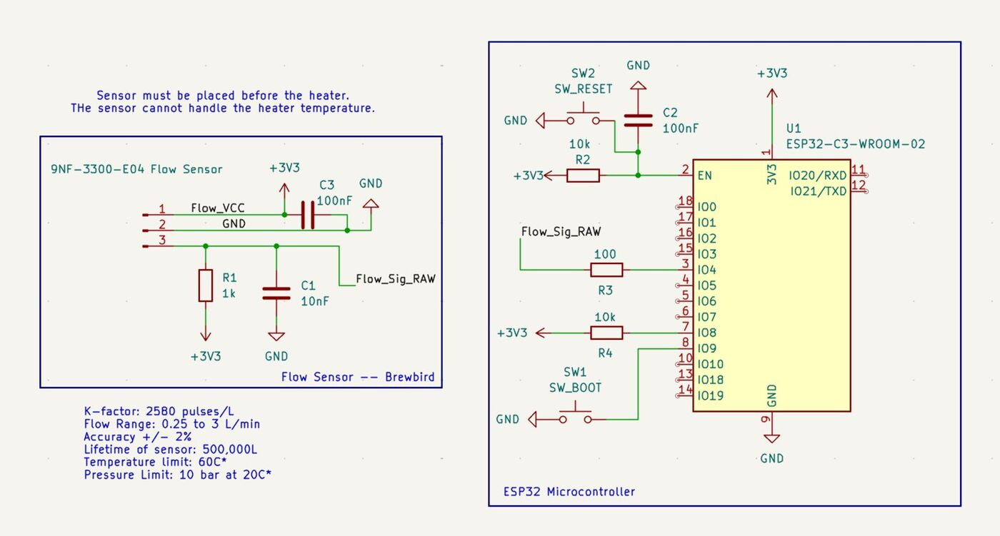

Embedded
Brewbird flow sensing
Accurate water volume for a brewing machine with a pulse-output flow sensor.
- Where
- Brewbird
- Role
- Intern project

Integrated a flow sensor into the fluid path to measure dispensed water and make brews repeatable, within the machine's thermal and pressure limits.
Decisions
- Thermal limit
- The sensor is rated to 60 °C, so it sits before the heater. Placement mattered as much as the circuit.
- Noisy pulses
- The open-collector output needed a pull-up, RC filtering and careful routing before it was usable.
- Air bubbles
- Bubbles throw off the readings, so the system needs a priming routine and correct mounting.
- Pump and power noise
- Fixed with routing strategy and filtering.
Measurement
Pulse counts convert to volume through a K-factor, calibrated and validated against known volumes. The same data flags blockages and faults.